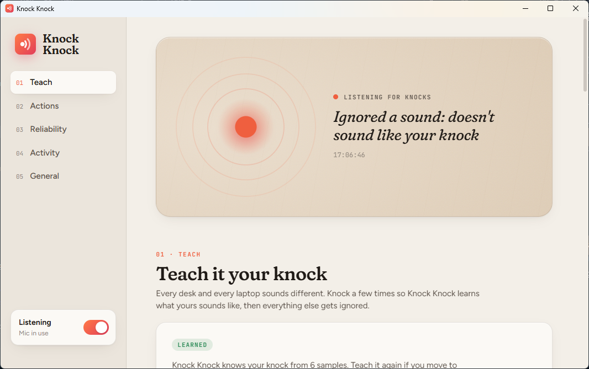

Free · Open source · Windows 10 & 11
Knock on your desk.
Take a screenshot.
Knock Knock is a tiny Windows app that turns knocks on your desk into shortcuts. It listens through the microphone your laptop already has. Knock twice for a screenshot, or set any knock count to open an app, pause music, press a shortcut or lock your PC.
How it works
Your desk becomes a shortcut button
No sensors and no special hardware. Knock Knock uses your built-in or USB microphone to hear a knock on the desk your laptop is sitting on.
Teach it your knock
Knock 6 times. Knock Knock learns how your knock sounds on your desk: its tone and how quickly it fades.
Knock a pattern
Knock 2 to 8 times, evenly spaced. Each count is its own shortcut.
It runs the action
A screenshot is saved as a PNG and copied to your clipboard, or your app opens, or your music pauses. Whatever you picked.
What a knock can do
One knock count, one action
Out of the box, 2, 3 and 4 knocks take screenshots. Change any count from 2 to 8 to run one of these.
Only real knocks
Bumps, clicks and thuds are ignored
- Learned knock. Anything that doesn't sound like the knock you taught it is ignored.
- Rhythm check. Knocks must be evenly spaced and similarly strong.
- Ignore while typing. Nothing fires within a second of keyboard or touchpad use.
- Ignore when you've been away. Sitting back down at your desk won't trigger anything.
- Activity log. See every knock it acted on, and why it ignored the rest.

Nothing is recorded. Nothing leaves your PC.
Audio is analysed 10 milliseconds at a time in memory to measure loudness and tone, then thrown away. The app contains no networking code. When listening is off or your PC is locked, the microphone is fully closed and Windows' mic indicator disappears.
Install
Running in under a minute
Download
Get KnockKnock.exe from the latest release. It's a single file.
Run it
The settings window opens and Knock Knock adds itself to startup. It lives in your system tray.
Teach it
Click Start teaching and knock 6 times. That's it.
"Windows protected your PC"? The .exe isn't code-signed yet, so Windows may warn about it. Choose More info → Run anyway. If Smart App Control blocks it, run it from source instead. It's the same code, run through Windows' own PowerShell.
FAQ
Questions
Can I take a screenshot on Windows by knocking on my desk?
Yes. That's the default: knock twice and Knock Knock saves a PNG of your screen and copies it to the clipboard. Three knocks capture your second screen, four capture all screens.
Do I need special hardware or a sensor?
No. It uses your laptop's built-in microphone, or any USB microphone. It works best when the laptop or mic is on the desk you knock on.
Does it record or upload audio?
No. Audio is analysed in 10 ms chunks in memory and discarded straight away. The app has no networking code at all.
Will typing or bumping the desk trigger it?
Usually not. It learns what your knock sounds like, checks the rhythm, and ignores sounds while you're typing. The Activity panel shows why each ignored sound was rejected.
Does it work on macOS or Linux?
Not yet. Knock Knock runs on Windows 10 and Windows 11.
Is it free?
Yes. It's free and open source under the MIT license. Contributions are welcome on GitHub.
Knock knock.
Free for Windows 10 and 11. Open source, built in the open, and happy to have help.